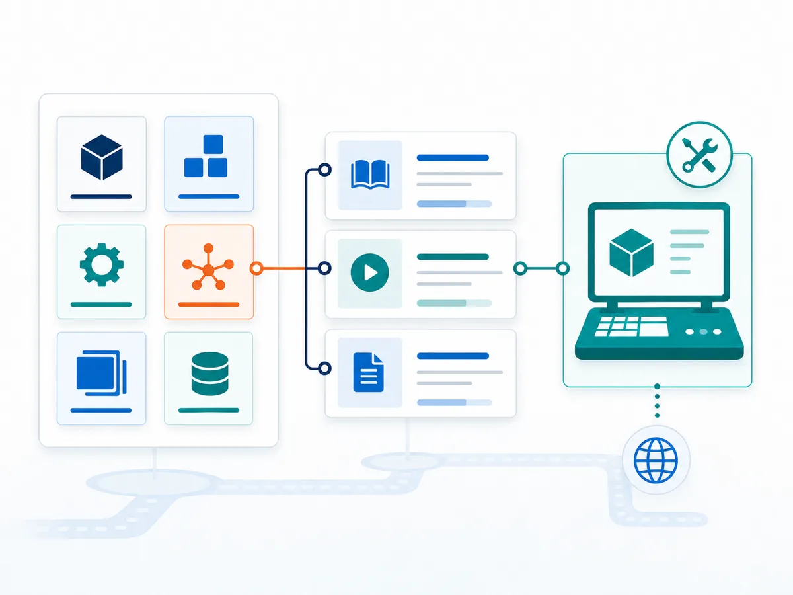

내 모듈에 맞는
SAP 공식 교육을 찾습니다
익숙한 모듈 코드로 SAP 현재 명칭과 공식 과정을 찾을 수 있게 정리했습니다. 전체를 들으라는 뜻이 아닙니다. 지금 필요한 것만 골라 쓰면 됩니다.

담당 모듈을 고르세요
모듈 코드나 한글 이름으로 바로 검색할 수 있습니다.
전용 Learning Journey가 있는 모듈
자재 · 구매
Learning JourneySourcing and Procurement
영업
Learning JourneySales
생산
Learning JourneyManufacturing
설비보전
Learning JourneyAsset Management (EAM)
재무회계
Learning JourneyFinancial Accounting
관리회계
Learning JourneyManagement Accounting
창고
Learning JourneyExtended Warehouse Management
운송
Learning JourneyTransportation Management
과정 단위로만 제공되는 영역
전용 Learning Journey가 없습니다. 개별 과정으로 접근합니다.
자산회계
FI 하위Asset Accounting
인사
과정 단위Human Capital Management
자금
과정 단위Treasury and working capital management
연결결산
과정 단위Group Reporting
Central Finance
과정 단위Central Finance
이번 프로그램에서 바로 쓰지 않는 영역
표준 SAP 과정이 없거나, 사내 커스텀 구축과 달라 자동 적용하지 않는 영역입니다.
품질
사내 커스텀 범위Quality Management
공식 표준 journey LSC00990과 과정이 Catalog에 있지만, 이번 프로그램의 QM은 사내 커스텀 구축 범위라 자동 적용하지 않는다.
프로젝트
사내 커스텀 범위Enterprise Portfolio and Project Management — Project System
공식 표준 journey LSC01042와 과정이 Catalog에 있지만, 이번 프로그램의 PS는 사내 커스텀 구축 범위라 자동 적용하지 않는다.